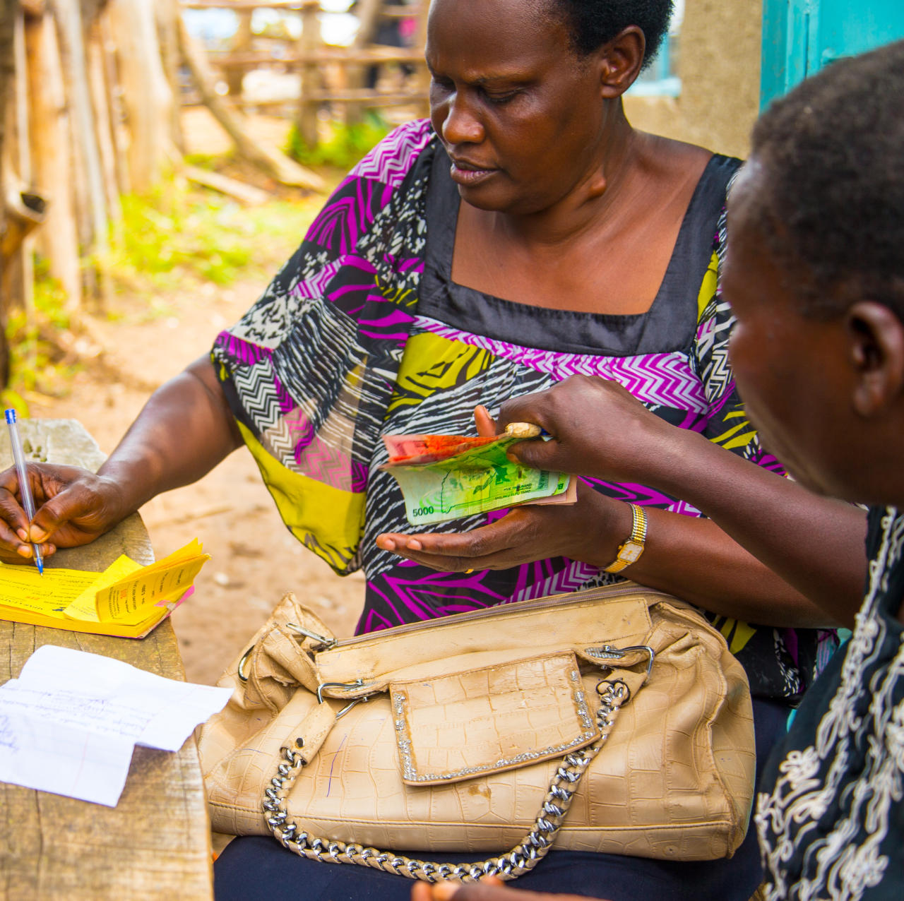

Together we can empower lives and build a better future
Across our communities, many families, youth, and small businesses are struggling to access financial support and opportunities.
Your contribution becomes a lifeline — helping provide loans, training, and opportunities that transform lives.

“The highest virtue is to help a person become independent.”
Bank Name: Cooperative Bank
Paybill Number: 400200
Account Number: 1129417
Kindly use your name as reference when making the donation.
Help families meet basic needs and become financially stable.
Enable entrepreneurs to expand and create jobs.
Provide training, mentorship and opportunities.
Your support is not just a donation — it is an investment in people, dignity, and a stronger community.
Rebuild with dignity. Rebuild with Ogen.